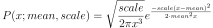

numpy.random.RandomState.wald¶
method
-
RandomState.wald(mean, scale, size=None)¶ Draw samples from a Wald, or inverse Gaussian, distribution.
As the scale approaches infinity, the distribution becomes more like a Gaussian. Some references claim that the Wald is an inverse Gaussian with mean equal to 1, but this is by no means universal.
The inverse Gaussian distribution was first studied in relationship to Brownian motion. In 1956 M.C.K. Tweedie used the name inverse Gaussian because there is an inverse relationship between the time to cover a unit distance and distance covered in unit time.
Note
New code should use the
waldmethod of adefault_rng()instance instead; see random-quick-start.- Parameters
- meanfloat or array_like of floats
Distribution mean, must be > 0.
- scalefloat or array_like of floats
Scale parameter, must be > 0.
- sizeint or tuple of ints, optional
Output shape. If the given shape is, e.g.,
(m, n, k), thenm * n * ksamples are drawn. If size isNone(default), a single value is returned ifmeanandscaleare both scalars. Otherwise,np.broadcast(mean, scale).sizesamples are drawn.
- Returns
- outndarray or scalar
Drawn samples from the parameterized Wald distribution.
See also
Generator.waldwhich should be used for new code.
Notes
The probability density function for the Wald distribution is

As noted above the inverse Gaussian distribution first arise from attempts to model Brownian motion. It is also a competitor to the Weibull for use in reliability modeling and modeling stock returns and interest rate processes.
References
- 1
Brighton Webs Ltd., Wald Distribution, https://web.archive.org/web/20090423014010/http://www.brighton-webs.co.uk:80/distributions/wald.asp
- 2
Chhikara, Raj S., and Folks, J. Leroy, “The Inverse Gaussian Distribution: Theory : Methodology, and Applications”, CRC Press, 1988.
- 3
Wikipedia, “Inverse Gaussian distribution” https://en.wikipedia.org/wiki/Inverse_Gaussian_distribution
Examples
Draw values from the distribution and plot the histogram:
>>> import matplotlib.pyplot as plt >>> h = plt.hist(np.random.wald(3, 2, 100000), bins=200, density=True) >>> plt.show()